Áreas de calibración y Ms
Patron-Rivero, C.
2025
Repositorios
Base disponible en:
| Infomación.espacial.de.variables.ambientales | X | X.1 | X.2 | X.3 | X.4 | X.5 | X.6 | X.7 | |
|---|---|---|---|---|---|---|---|---|---|
| 1 | Tipo | NA | ID | Región | Descripción | Resolución espacial | Pagina web | Documentacion | |
| 2 | Clima | 1 | EarthEnv | Global | Global 1-km Cloud Cover | 1 km | http://www.earthenv.org/cloud | http://journals.plos.org/plosbiology/article?id=10.1371/journal.pbio.1002415 | |
| 3 | 2 | Clima | Sudamérica | Bioclim variables for Southern South America | https://www.unil.ch/ecospat/home/menuguid/ecospat-resources/data.html | ||||
| 28 | 28 | Global Aridity Index & Potential Evapotranspiration | Global | Version 3 of the Global Aridity Index and Potential Evapotranspiration Database | https://www.nature.com/articles/s41597-022-01493-1#data-availability | https://www.nature.com/articles/s41597-022-01493-1 | |||
| 29 | 29 | Sequía | Global | Global Future Drought Layers (CMPI6) | https://www.nature.com/articles/s41597-025-04612-w | ||||
| 30 | 30 | MexHiResClimDB | MÉXICO | https://essd.copernicus.org/articles/17/6911/2025/ |
Formatos y resolución
Raster: matriz de celdas (o píxeles) organizadas en filas y columnas en la que cada una contiene un valor que representa información
Resolución: número de pixeles que se utilizan para construir un raster
Resolución
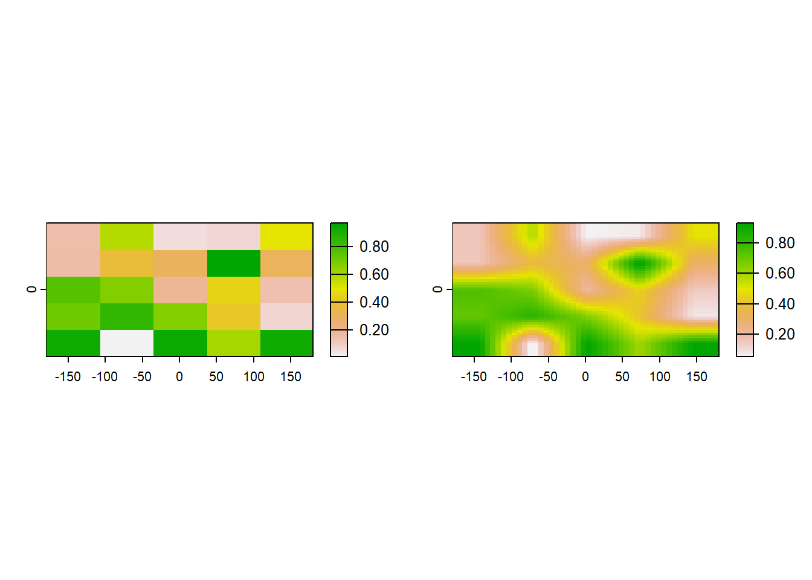
Escala
library(terra)
setwd("D:/2026_ENM/Calibracion")
m_10 <- rast("./variables/elev_10.tif") # ~340 km2
m_5 <- rast("./variables/elev_5.tif")
m_25 <- rast("./variables/elev_2_5.tif")
s_30 <- rast("./variables/elev_30.tif") # ~1 km2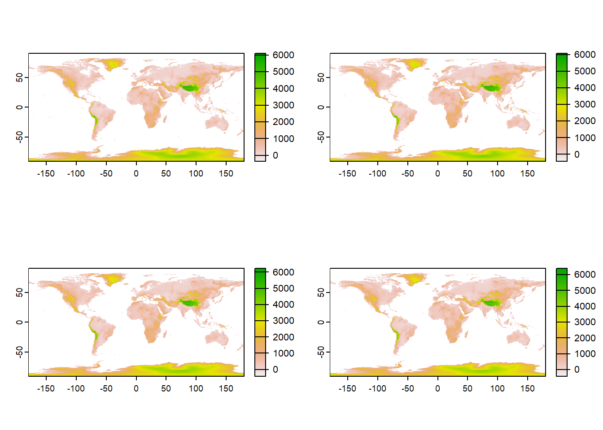
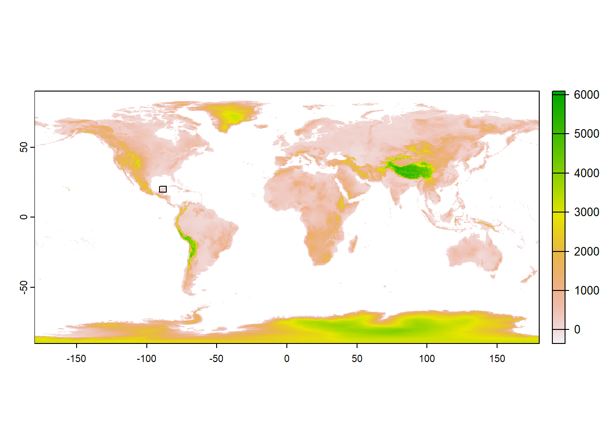
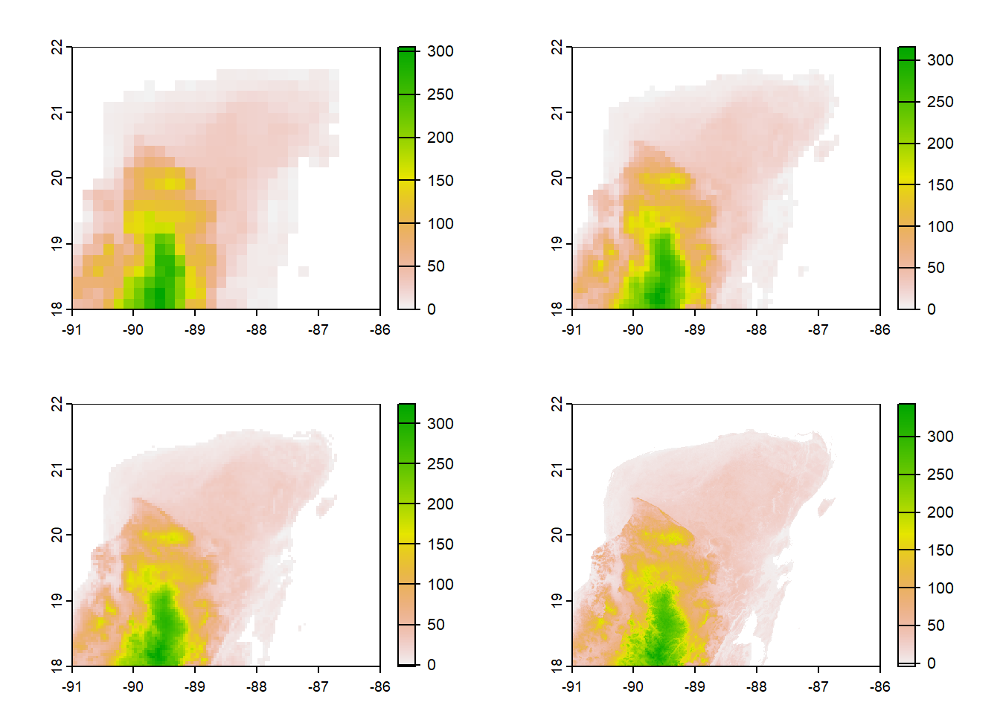
Cortar variables
Por extent
library(terra)
setwd("D:/2026_ENM/Calibracion/variables/set1")
set1 <- list.files(pattern = ".tif")
set1 <- rast(set1)
plot(set1)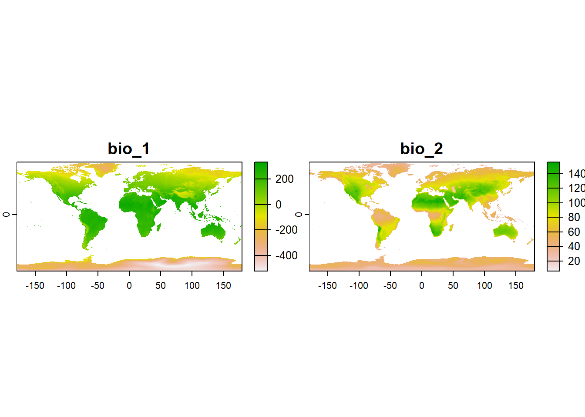
ext1 <- ext(-91, -86, 18, 22)
s1_e1 <- crop(set1, ext1)
plot(s1_e1)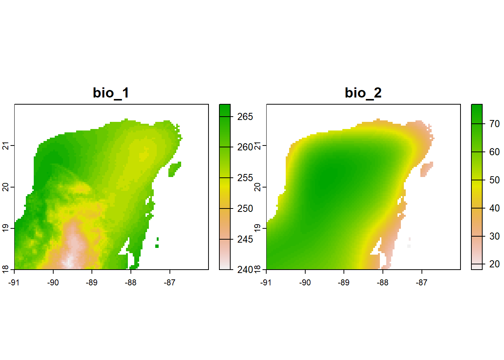
Por polygono (.shp)
library(terra)
ext2 <- vect("D:/2026_ENM/Calibracion/shp/accessible_area_M.shp")
plot(ext2)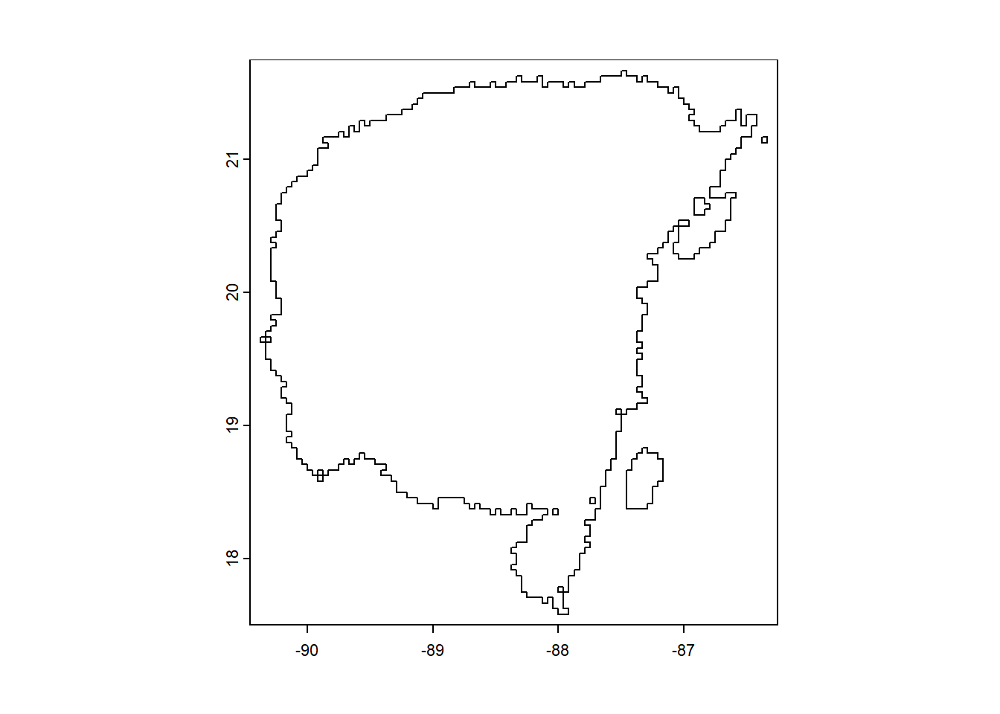
s1_e2 <- crop(set1, ext2, mask = TRUE)
plot(s1_e2)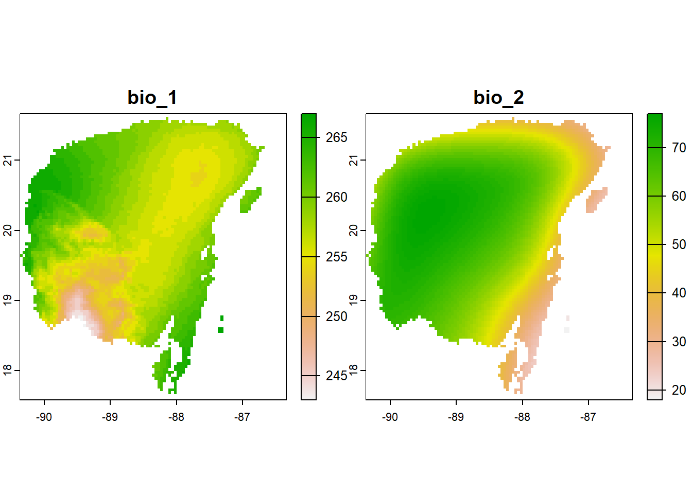
Por otro raster
library(terra)
plot(set1)
e3 <- s1_e2[[1]]
plot(e3)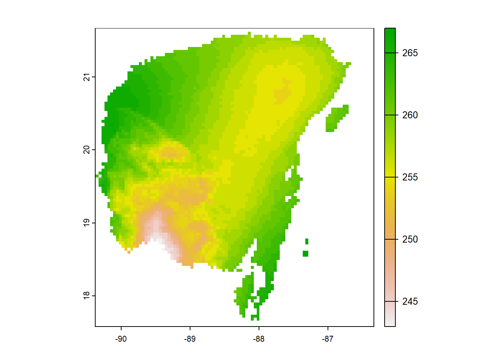
s1_e3 <- crop(set1, e3, mask = TRUE)
plot(s1_e3)
Crear área de calibración y M (sensu Soberón & Peterson)
https://onlinelibrary.wiley.com/doi/10.1111/jbi.14834


Buffers / Capacidad de dispersión
#if(!require(ellipsenm)){
# devtools::install_github("marlonecobos/ellipsenm")
#}
library(terra)
library(ellipsenm)
occ <- read.csv("D:/2026_ENM/Calibracion/P_yuc.csv")
head(occ)## Species Long Lat dtb
## 1 P_yuc -89.01833 18.23667 gbif
## 2 P_yuc -89.44000 18.51000 vnet
## 3 P_yuc -89.43987 18.51069 gbif
## 4 P_yuc -89.72500 19.46361 gbif
## 5 P_yuc -89.72500 19.46361 dig_lit
## 6 P_yuc -88.00796 19.51897 gbifbuf_50 <- buffer_area(data = occ, longitude = "Long", latitude = "Lat", buffer_distance = 50)
buf_100 <- buffer_area(data = occ, longitude = "Long", latitude = "Lat", buffer_distance = 100)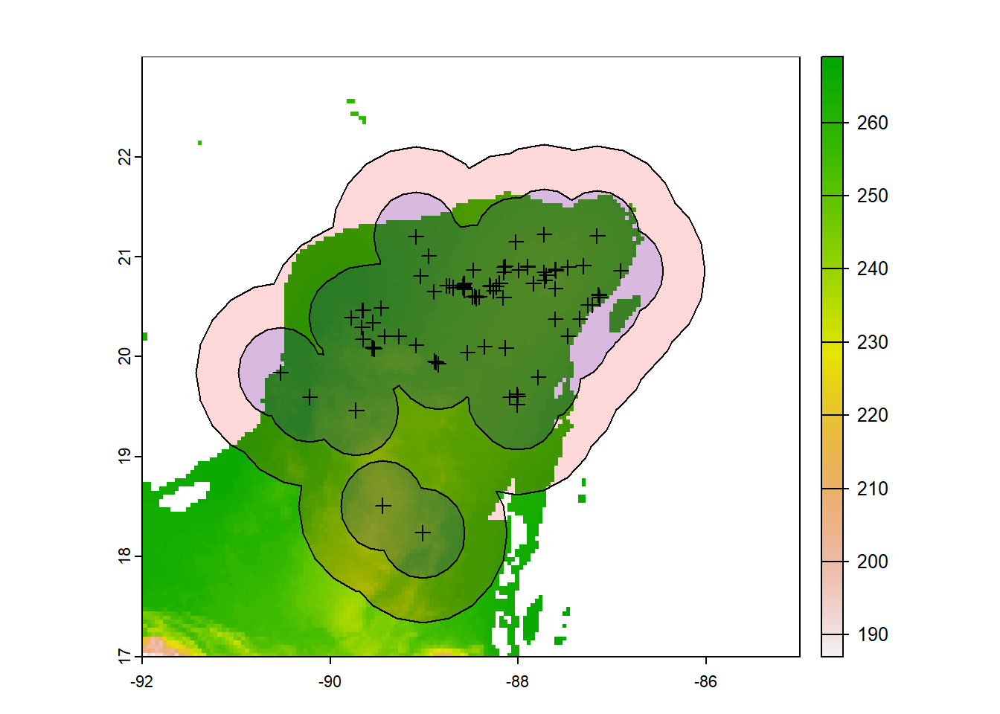
buf_50 <- vect(buf_50)
b50 <- crop(set1, buf_50, mask = TRUE)
buf_100 <- vect(buf_100)
b100 <- crop(set1, buf_100, mask = TRUE)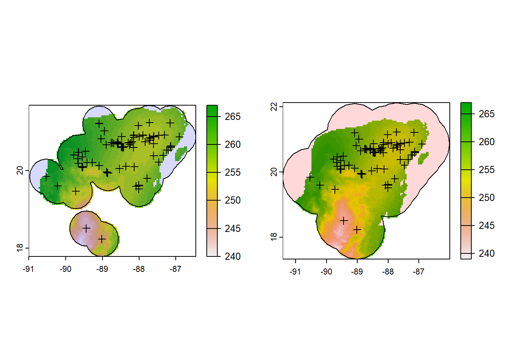
# Sin elipsenm, directo con terralibrary(terra)
points <- vect(occ, geom = c("Long", "Lat"), crs = "EPSG:4326")
points_m <- project(points, "EPSG:3395") # usa metros
buf_50m <- aggregate(buffer(points_m, width = 50000)) # 50 km
buf_100m <- aggregate(buffer(points_m, width = 100000)) # 100 km
buf_50 <- project(buf_50m, "EPSG:4326")
buf_100 <- project(buf_100m, "EPSG:4326")
b50 <- crop(set1, buf_50, mask = TRUE)
b100 <- crop(set1, buf_100, mask = TRUE)
plot(buf_100, border = "red", col = NA)
plot(buf_50, border = "blue", col = NA, add = TRUE)
plot(points, pch = 20, col = "black", add = TRUE)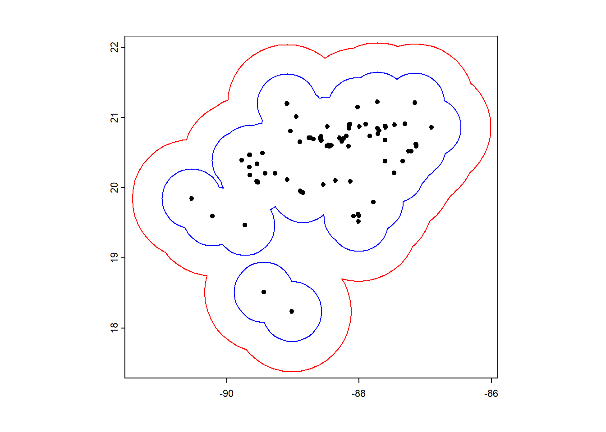
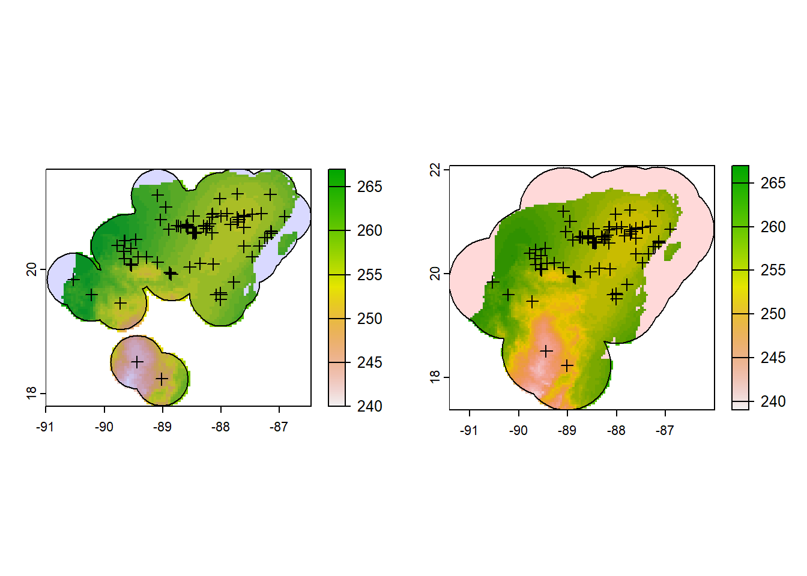
Convex hulls
library(sp)
library(terra)
ch <- chull(occ[, 2:3])
coords <- occ[c(ch, ch[1]), ]
plot(set1[[1]], ext = c(-95, -86, 15, 25))
points(occ[, 2:3], pch = 3, add = TRUE)
lines(coords[, 2:3], col="red", add = TRUE)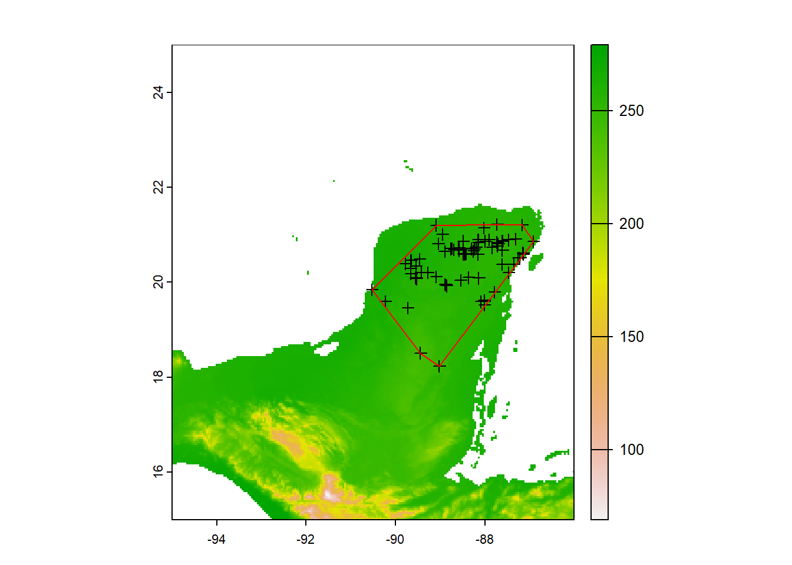
ch_poly <- SpatialPolygons(list(Polygons(list(Polygon(coords[2:3])), ID = 1)), proj4string = CRS("+proj=longlat +datum=WGS84 +no_defs +ellps=WGS84 +towgs84=0,0,0"))
ch_poly <- vect(ch_poly)
ch_M <- crop(set1, ch_poly, mask = TRUE)
plot(ch_M[[1]])
plot(ch_poly, add = TRUE)
points(occ[, 2:3], pch = 3)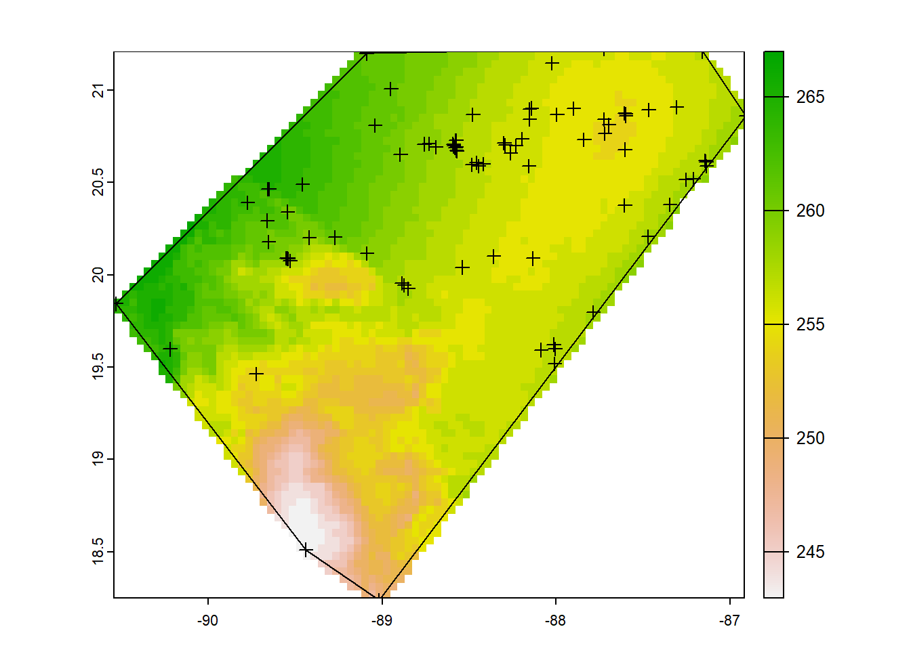
Alpha hulls
library(terra)
library(rangeBuilder)
cro <- crotalus[which(crotalus$genSp == "Crotalus_atrox"), ]
cro <- cro[sample(1:nrow(cro), 50), ]
ahull <- getDynamicAlphaHull(cro, coordHeaders = c("decimallongitude", "decimallatitude"), clipToCoast = "terrestrial")
ahull_sp <- vect(ahull[[1]])
ah_M <- crop(set1, ahull_sp, mask = TRUE)
plot(set1[[1]], ext = c(-116.8008, -95.8191, 24.56832, 36.73357))
plot(ahull_sp, add = TRUE)
points(cro[, c("decimallongitude", "decimallatitude")], pch = 3)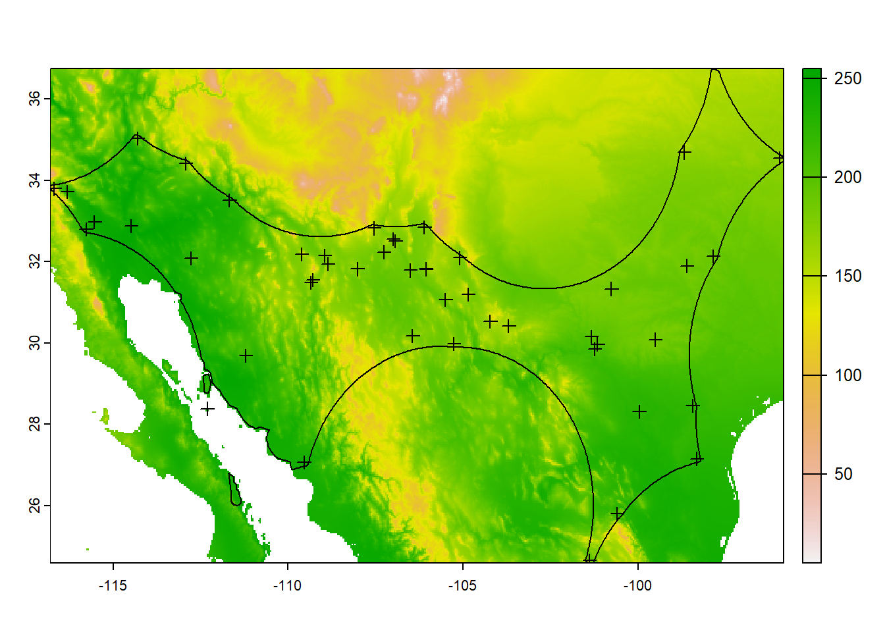
Presencia en un polígono / Ecorregiones terrestres
Reinos, Provincias y Ecorregiones marinas
https://academic.oup.com/bioscience/article/57/7/573/238419?login=false
library(terra)
jjm <- vect("D:/2026_ENM/Calibracion/ecoreg/Ecoregions2017.shp")
occ1 <- occ[, 2:3]
occ2 <- vect(as.matrix(occ1), type = "points", crs = "EPSG:4326")
jjm_subset <- jjm[occ2, ]
ecor <- aggregate(jjm_subset)
ecor_M <- crop(set1, ecor, mask = TRUE)
plot(ecor_M[[1]])
plot(ecor, add = TRUE, border = "blue", lwd = 2)
points(occ1, pch = 3)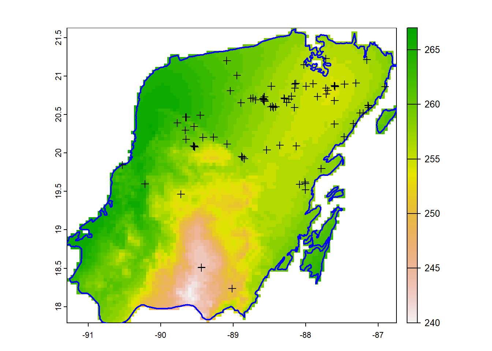
Grinnel
https://escholarship.org/uc/item/8hq04438

Autómatas celulares


NOTA: AQUÍ empiezan los problemas
Python
Es necesario descargar e instalar Python 3.9 (sólo esta versión)
https://www.python.org/downloads/release/python-3913/
#library(remotes)
#remotes::install_github("fmachados/grinnell")
library(grinnell)
library(raster)
library(parallel)
py.path <- "C:/Users/manol/AppData/Local/Microsoft/WindowsApps/PythonSoftwareFoundation.Python.3.9_qbz5n2kfra8p0"
Sys.setenv(PATH = paste(py.path, Sys.getenv()["PATH"], sep = ";"))
system("python --version")## [1] 0system("python -m pip install numpy")## [1] 0Registros y variables
occ <- "E:/5_Curso_ENM/2025/P_6/env_data/P_arc.csv"
cu <- "E:/5_Curso_ENM/2025/P_6/env_data/current"
# Pleistocene: Last Glacial Maximum (ca. 21 ka)
past <- "E:/5_Curso_ENM/2025/P_6/env_data/past_lgm"
#dir.create("E:/5_Curso_ENM/2025/P_6/env_data/sim")
odir1 <- "E:/5_Curso_ENM/2025/P_6/env_data/sim"Configurar la simulación
‘kernel_spread’ distancia en pixeles al pixel original (2 = 24 pixeles)
‘max_dispersers’ número de disperciones aceptadas por cada evento de dispersión (6 = 1/4 de las posibilidades)
‘replicates’ número de réplicas para calcular S (cada réplica inicia con un “starting population” diferente)
‘dispersal_events’ número de eventos de dispersión a lo largo de tu ST (20 eventos por año X n ka)
‘simulation_period’ tiempo que dura la simulación (unidad en miles de años). 21 porque nuestra primera variable es de hace 21 ka
‘stable_lgm’ tiempo en el que el mis condiciones en el pasado se mantienen.
‘transition_to_lgm’ Tiempo de transición entre el periodo en el pasado al presente. 3 ka
‘lgm_to_current’ Tiempo total del pasado hasta el presente. 21 ka
‘stable_current’ Total de tiempo en el que las condiciones ambientales en el presente han estado estables. Alrededor de 2 ka
‘scenario_span’ Total de tiempo desde el pasado hasta el presente. 21 ka al presente y 2 ka del actual = 23.
M_simulation(data = occ, current_variables = cu,
project = TRUE, projection_variables = past,
kernel_spread = 2, max_dispersers = 6,
replicates = 5, dispersal_events = 420,
simulation_period = 21, stable_lgm = 10,
transition_to_lgm = 3, lgm_to_current = 21,
stable_current = 2, scenario_span = 23,
output_directory = odir1)Resultados
Construye un enm con mve

Simula
library(raster)
library(rgdal)
setwd("E:/5_Curso_ENM/2025/P_6/env_data/sim")
shp <- readOGR("./accessible_area_M.shp")
m_disp <- raster("./A_mean_S1.asc")
m_disp1 <- mask(crop(m_disp, shp), shp)
v_disp <- raster("./A_var_S1.asc")
v_disp1 <- mask(crop(v_disp, shp), shp)
par(mfrow = c(1, 2))
plot(m_disp1, main = "Mean of Dispersal Simulated")
plot(shp, add = TRUE)
plot(v_disp1, main = "Variance of Dispersal Simulated")
plot(shp, add = TRUE)
Con datos a 7 escenarios al pasado
library(raster)
library(rgdal)
setwd("E:/5_Curso_ENM/2025/P_6/env_data/P_arc")
d1 <- vect("./p1", "accessible_area_M")
d2 <- vect("./p2", "accessible_area_M")
d3 <- vect("./p3", "accessible_area_M")
d4 <- vect("./p4", "accessible_area_M")
d5 <- vect("./p5", "accessible_area_M")
d6 <- vect("./p6", "accessible_area_M")
d7 <- vect("./p7", "accessible_area_M")
par(mfrow = c(2, 4))
plot(d1, main = "Current ditribution")
plot(d2, main = "8.326 - 4.2 ka")
plot(d3, main = "11.7 - 8.326 ka")
plot(d4, main = "12.9 - 11.7 ka")
plot(d5, main = "14.7 - 12.9 ka")
plot(d6, main = "17.0 - 14.7 ka")
plot(d7, main = "Glacial Maximum ca.
21 ka")
Guardar nuestros resultados
library(raster)
ecor_M <- raster::stack(ecor_M)
setwd("D:/2026_ENM/Calibracion/variables/ecor")
writeRaster(ecor_M, filename = names(ecor_M), bylayer = T, format = "GTiff", overwrite = TRUE)